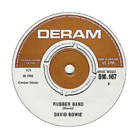
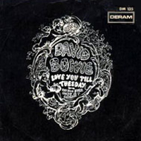

Bowie's time as a mod was a bit blink-and-you'll miss it; sonically, it is best captured on his 1966 singles Can't Help Thinking About Me (with The Lower Third) and I Dig Everything. The artwork for his self-titled debut album sees him sporting his short-lived, proto-Paul Weller feathered Modfather 'do, in a photo taken by Gerald Fearnley, brother of Dek Fearnley, who had played bass and written the album's orchestral arrangements. But even at this early stage, the restless young Bowie had already moved on from mod: music-hall, mime and messianic delusions (in the shape of We Are Hungry Men) characterise the David Bowie album, which came out on 1 June 1967, the same day as The Beatles' St Pepper's Lonely Hearts Club Band lit the touch paper for the Summer Of Love.
Photographer: Gerald Fearnley
UNCLE ARTHUR
Strikes the bell for 5 o'clock, Uncle Arthur closes shop
Screws the tops on all the bottles, turns the lights out, locks it up
Climbs across his bike and he's away
Cycles past the gasworks, past the river, down the high street
Back to mother, it's another empty day
Uncle Arthur likes his mommy
Uncle Arthur still reads comics
Uncle Arthur follows Batman
Round and round the rumours fly, how he ran away from Mum
On his 32nd birthday, told her that he'd found a chum
Mother cried and raved and yelled and fussed
Arthur left her no illusion
Brought the girl round, save confusion
Sally was the real thing, not just lust
Uncle Arthur vanished quickly
Uncle Arthur and his new bride
Uncle Arthur follows Sally
Round and round goes Arthur's head
Hasn't eaten well for days
Little Sally may be lovely
But cooking leaves her in a maze
Uncle Arthur packed his bags and fled
Back to mother, all's forgiven, serving in the family shop
He gets his pocket money, he's well fed
Uncle Arthur past the gasworks
Uncle Arthur past the river
Uncle Arthur down the high street
Uncle Arthur follows mother
SELL ME A COAT
La la la la la la, la la la la la la la
A winter's day, a bitter snowflake on my face
My summer girl takes little backward steps away
Jack Frost took her hand and left me
Jack Frost ain't so cool
[CHORUS]
Sell me a coat with buttons of silver
Sell me a coat that's red or gold
Sell me a coat with little patch pockets
Sell me a coat because I feel cold
And when she smiles, the ice forgets to melt away
Not like before, her smile was warm in yesterday
See the trees like silver candy, feel my icy hand
[CHORUS]
See my eyes, my window pane
See my tears like gentle rain
That's the memory of the summer day
[CHORUS x 2]
La la la la la la
RUBBER BAND
Rubber Band
There's a rubber band that plays tunes out of tune
In the library garden Sunday afternoon
While a little chappie waves a golden wand
Rubber Band
In 1910, I was so handsome and so strong
My moustache was stiffly waxed and one foot long
And I loved a girl while you played teatime tunes
Dear Rubber Band, you're playing my tune out of tune
Oh
Rubber Band
Won't you play a haunting theme again to me
While I eat my scones and drink my cup of tea?
The sun is warm but it's a lonely afternoon
(Oh, play that theme)
Rubber Band
How I wish that I could join your Rubber Band
We could play in lively parks throughout the land
And one Sunday afternoon, I'd find my love
Rubber Band
In the '14-'18 war I went to sea
Thought my Sunday love was waiting home for me
And now she's married to the leader of your band, oh
Oh yeah
I hope you break your baton
LOVE YOU TILL TUESDAY
Just look through your window, look who sits outside
Little me is waiting, standing through the night
When you'll walk out through your door I'll wave my flag and shout
Oh, beautiful baby
My burning desire started on Sunday
Give me your heart and I'll love you till Tuesday
Da da da dum
Da da da dum
Da da da dum
Da da da dum
Who's that hiding in the apple tree, clinging to a branch
Don't be afraid it's only me, hoping for a little romance
If you lie beneath my shade, I'll keep you nice and cool
Oh, beautiful baby
I was very lonely till I met you on Sunday
My passion's never-ending and I'll love you till Tuesday
Da da da dum
Da da da dum
Da da da dum
Da da da dum
Let the wind blow through your hair, be nice to the big blue sea
Don't be afraid of the man in the moon, because it's only me
I shall always watch you until my love runs dry
Oh, beautiful baby
My heart's a flame, I'll love you till Tuesday
My head's in a whirl and I'll love you till Tuesday
Love, love, love, love you till Tuesday
Love, love, love, love you till Tuesday
Da da da dum
Da da da dum
La da da dum
Da da da dum
Well, I might stretch it till Wednesday
THERE IS A HAPPY LAND
There is a happy land where only children live
They don't have the time to learn the ways of you sir, Mr. Grownup
There's a special place in the rhubarb fields underneath the leaves
It's a secret place and adults aren't allowed there Mr. Grownup
Go away sir
Charlie Brown got's half a crown, he's gonna buy a kite
Jimmy's ill with chicken pox, and Tommy's learned to ride his bike
Tiny Tim sings prayers and hymns, he's so small we don't notice him
He gets in the way but we always let him play with us
Mother calls, but we don't hear
There's lots more things to do
It's only 5 o'clock, and we're not tired yet
But we will be very shortly
Sissy Steven plays with girls, someone made him cry
Tony climbed a tree and fell, trying hard to touch the sky
Tommy lit a fire one day, nearly burned the field away
Tommy's mum found out, but he put the blame on me and Ray
There is a happy land where only children live
You've had your chance and now the doors are closed sir, Mr. Grownup
Go away sir
Boo, de boo, de boo, de boo dup
Boo, de boo, de boo, de boo dup
Boo, de boo, de boo, de boo dup
WE ARE HUNGRY MEN
Here is the news
According to the latest world population survey
The figures have reached danger point, my god
London 15 million 75 thousand
New York 80 million
Paris 15 million and 30
China 1,000 million
Billington-Spa: lots
My studies include exophagy
I formed my own society
To crush the power of fecundity
The world will overpopulate
Unless you claim infertility
So who will buy a drink for me, your messiah
[CHORUS]
We are not your friends
We don't give a damn for what you're saying
We're here to live our lives
I propose to give the pill
Free of charge to those that feel
That they are not infertible
The crops are few, the cattle gone
There's only one way to linger on
So who will buy a drink for me, your messiah
[CHORUS]
Achtung, Achtung, these are your orders
Anyone found guilty of consuming more than their allotted amount of air
Will be slaughtered and cremated
One only cubic foot of air is allowed
I have prepared a document legalising mass abortion
We will turn a blind eye to infanticide
[CHORUS]
You don't seem to hear me clear
Do I talk about your sphere?
Let me explain my project dear
Show you how I'll save the world
Or let it die within the year
Why do you look that way at me, your messiah
[CHORUS]
We are hungry men
We don't give a damn for what you're saying
We're here to eat you
WHEN I LIVE MY DREAM
When I live my dream, I'll take you with me
Riding on a golden horse
We'll live within my castle with people there to serve you
Happy at the sound of your voice
Baby, I'll slay a dragon for you
Or banish wicked giants from the land
But you will find that nothing in my dream can hurt you
We will only love each other as forever
When I live my dream
When I live my dream, I'll forgive the things you've told me
And the empty man you left behind
It's a broken heart that dreams, it's a broken heart you left me
Only love can live in my dream
I'll wish, and the thunder clouds will vanish
Wish, and the storm will fade away
Wish again, and you will stand before me while the sky will paint an overture
And trees will play the rhythm of my dream
When I live my dream, please be there to meet me
Let me be the one to understand
When I live my dream, I'll forget the hurt you gave
Then we can live in our new land
'Til the day my dream cascades around me
I'm content to let you pass me by
'Til that day, you'll run to many other men
But let them know it's just for now
Tell them that I've got a dream
And tell them you're the starring role
Tell them I'm a dreaming kind of guy
And I'm gonna make my dream
Tell them I will live my dream
Tell them they can laugh at me
But don't forget your date with me
When I live my dream
LITTLE BOMBARDIER
War made him a soldier
Little Frankie Mear
Peace left him a loser
The little bombardier
Lines of worry appeared with age
Unskilled hands that knew no trade
Spent his time in the picture house
The little bombardier
Frankie drank his money
The little that he made
Told his woes to no man
Friendless, lonely days
Then one day, in the ABC
Four bright eyes gazed longingly
At the ice-cream in the hand of
The little bombardier
Sunshine entered our Frankie's days
Gone his worries, his hopeless maze
His life was fun and his heart was full of joy
Two young children had changed his aims
He gave them toffees and played their games
He bought them presents with every coin he made
Then two gentlemen called on him
Asked him for his name
Why was he friends with the children
Were they just a game?
Leave them alone or we'll get sore
We've had blokes like you in the station before
The hand of authority said, "No more" to
The little bombardier
Packed his bags, his heart in pain
Wiped a tear and caught a train
Not to be seen in the town again
The little bombardier
SILLY BOY BLUE
Mountains of Lhasa are feeling the rain
People are walking the Botella lanes
Preacher takes the school
One boy breaks a rule
Silly boy blue, blue, silly boy blue
Yak butter statues that melt in the sun
Cannot dissolve all the work you've not done
A chela likes to feel
That his overself pays the bill
Silly boy blue, blue, silly boy blue
You wish and wish, and wish again
You've tried so hard to fly
You'll never leave your body now
You've got to wait to die
La la la la la la la la la la
La la la la la la la la la la
La la la la la
La la la la la
Silly boy blue, blue, silly boy blue
Child of Tibet, you're a gift from the sun
Reincarnation of one better man
The homeward road is long
You've left your prayers and song
Silly boy blue, blue, silly boy blue
Silly boy blue, blue, silly boy blue
COME AND BUY MY TOYS
Smiling girls and rosy boys
Come and buy my little toys
Monkeys made of gingerbread
And sugar horses painted red
Rich men's children running past
Their fathers dressed in hose
Golden hair and mud of many acres on their shoes
Gazing eyes and running wild
Past the stocks and over stiles
Kiss the window merry child
But come and buy my toys
You've watched your father plough the fields with a ram's horn
Sowed it wide with peppercorn and furrowed with a bramble thorn
Reaped it with a sharpened scythe, threshed it with a quill
The miller told your father that he'd work it with the greatest will
Now your watching's over
You must play with girls and boys
Leave the parsley on the stalls
Come and buy my toys
You shall own a cambric shirt
You shall work your father's land
But now you shall play in the market square
'Til you'll be a man
Smiling girls and rosy boys
Come and buy my little toys
Monkeys made of gingerbread
And sugar horses painted red
JOIN THE GANG
Let me introduce you to the gang
Johnny plays the sitar, he's an existentialist
Once he had a name, now he plays our game
You won't feel so good now that you've joined the gang
Molly is the model in the ads
Crazy clothes and acid full of soul and crazy hip
Someone switched her on, then her beam went wrong
Because she can't switch off now that she's joined the gang
Arthur is a singer with a band
Arthur drinks two bottles just before he goes on stage
Look at Arthur rave, all the kids have paid
They want to see the croaking man who joined the gang
You won't be alone, we've all got beery grins
It's a big illusion but at least you're in
At least you're in
This club's called The Webb, it's this month's pick
Next month we shall find a place where prices ain't so stiff
15 bob a go, afraid that's past a joke
This is how to spend now that you've joined the gang
This is what to do now that you're here
Sit round doing nothing all together very fast
Psychedelic stars, throwing down cigars
They're picking up the joints now that they've joined the gang
SHE'S GOT MEDALS
She'd walk through the door and she'd set up the drinks on the house
She played a good game of darts
And the men slapped her back and never took her out
She wore a trenchcoat khaki
Her hobnail boots were full of holes
She's got medals
Her mother called her Mary, but she changed her name to Tommy
She's a one, oh
She went and joined the army, passed the medical
Don't ask me how it's done
They sent her to the front line
Fighting for her country's name
She's got medals
She got very tired of picking at girls
Cleaning her gun and shaving her curls
Then the enemy dropped a bomb
Survivors there were none
People say that when the moon is full and all the stars have gone to bed
You can see her ghost but that's a lie because the naughty woman isn't dead
She deserted on the previous morning
Replaced her uniform with dresses silk and green
Called herself Eileen
Came to London town
Now she's settled down
She's got medals
MAID OF BOND STREET
This girl is made of lipstick
Powder and paint
Sees the pictures of herself
Every magazine on every shelf
This girl is maid of Bond Street
Hailing cabs, lunches with executives
Gleaming teeth sip aperitifs
This girl is a lonely girl
Takes the train from Paddington to Oxford Circus
Buys the Daily News
But passengers don't smile at her, don't smile at her
This girl is made of loneliness
A broken heart
For the boy that she once knew
Doesn't want to know her any more
And this girl is a lonely girl
Everything she wants is hers
But she can't make it with the boy she really wants to be with
All the time, to love, all the time
This boy is made of envy
Jealousy
He doesn't have a limousine
Really wants to be a star himself
This girl, her world is made of flashlights and films
Her cares are scraps on the cutting room floor
And maids of Bond Street drive round in chauffeured cars
Maids of Bond Street picture clothes, eyes of stars
Maids of Bond Street shouldn't have worldly cares
Maids of Bond Street shouldn't have love affairs
PLEASE MR. GRAVEDIGGER
There's a little churchyard just along the way
It used to be Lambeth's finest array
Of tombstones, epitaphs, wreaths, flowers all that jazz
'Til the war come along and someone dropped a bomb on the lot
And in this little yard, there's a little old man
With a little shovel in his little bitty hand
He seems to spend all his days
Puffing fags and digging graves
He hates the reverend vicar and he lives all alone in his home
Achoo, excuse me
Please Mr. Gravedigger, don't feel ashamed
As you dig little holes for the dead and the maimed
Please Mr. Gravedigger, I couldn't care
If you found a golden locket full of some girl's hair
And you put it in your pocket
God, it's pouring down
Her mother doesn't know about your sentimental joy
She thinks it's down below with the rest of her toys
And Ma wouldn't understand, so I won't tell
So keep your golden locket all safely hid away in your pocket
Yes, Mr. GD, you see me every day
Achoo!
Standing in the same spot by a certain grave
Mary-Ann was only 10 and full of life and oh so gay
And I was the wicked man who took her life away
Very selfish, oh God
No, Mr. GD, you won't tell
And just to make sure that you keep it to yourself
I've started digging holes my friend
And this one here's for you
Flipping hard graft, he's paying me – that's what to worry about
Hello, what's this? Thought she'd be a little girl
Bloody obscene, (crikey) catch pneumonia or something in this rain
Stupid little cow, ay?
SINGLES

